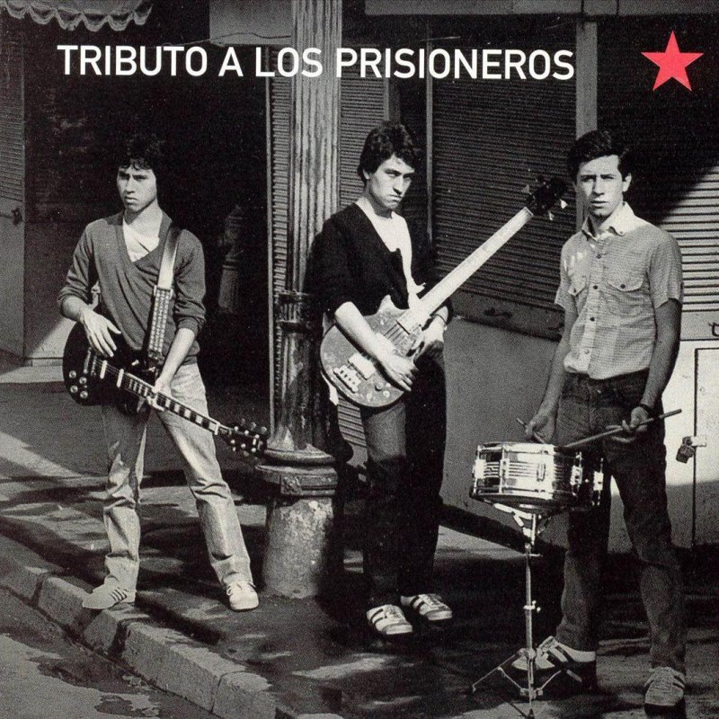
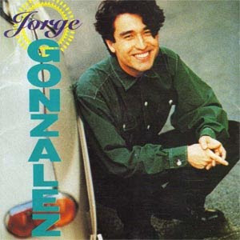

Los Prisioneros (1983-2006)
El alcance de sus canciones, la marca indeleble de su arenga social y la simplicidad pegajosa de sus melodías hicieron de Los Prisioneros una banda de características únicas en la historia del rock chileno. Nunca antes un conjunto local había combinado con tanta eficacia los códigos del pop y el rock con un mensaje político firme y urgente...


Jorge González
Uno de los más carismáticos rockeros de la historia de la música popular chilena, Jorge González fue el compositor, bajista y cantante de Los Prisioneros, el trío que formó junto a Miguel Tapia y Claudio Narea en 1983. Ha desarrollado también una carrera como solista y decenas de colaboraciones con otros músicos.